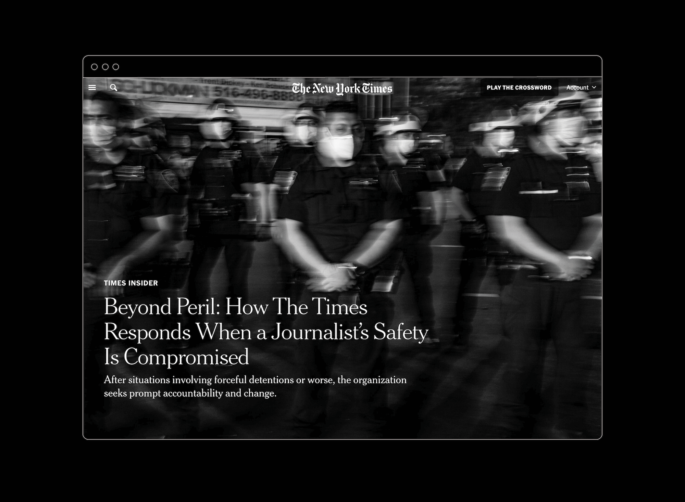
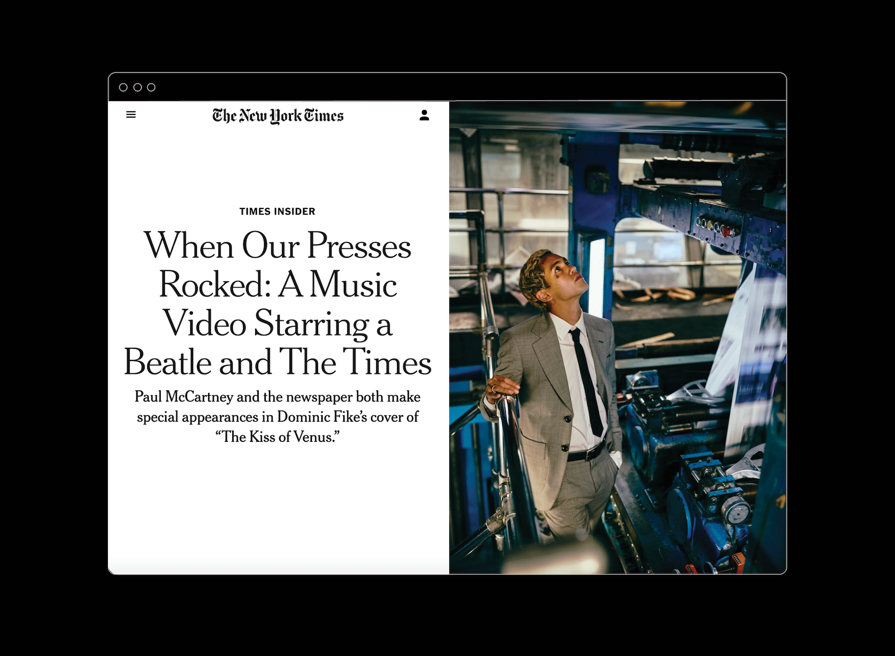

Drought and Abundance in Iraq's MarshesWords and Photographs by Emilienne Malfatto
Over more than a year and a half in the New York Times Newsroom, worked closely with the design directors of News Print Design to refresh the robust design system of the newspaper’s A and B-books. While the long-term project unfolds, tackling news design and art direction, from deadline projects to advance layouts to commissioned illustrations.
News Design
Select layouts for the New York Times.

Inside Missouri's '2nd Amendment Sanctuary' Fightby Glenn Thrush

Population: OneWords and Photographs by Ruth Fremson

A Town Bursting with Life, but Overlooked by Europe's Touristsby Gabriel Leigh

Black Voters Change the Look of Power in New YorkBy Katie Glueck and Jeffery C. Mays

Obituary: Donald Rumsfeldby Robert D. McFadden

Obituary: Collin PowellBy Eric Schmitt
Art Direction: Sketchbook
On Saturdays and Sundays, the Times prints an installment of 'Sketchbook', a standalone, black and white art spot on page 3. Sketchbook asks illustrators and artists to respond to current events in a visually compelling way.


Art Direction: Times Insider
Times Insider delivers behind-the-scenes insights into how Times journalism comes together. Each day, a new installment can be found online and on page 2 of the print newspaper.


Illustration by Antoine CosséIllustration by Holly Stapleton


Photograph by Jordan GalePhotograph by Daniel Prakopcyk